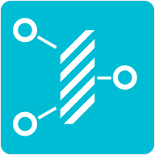

<link rel="import" href="../bower_components/polymer/polymer.html">

<link rel="import" href="../bower_components/iron-flex-layout/classes/iron-flex-layout.html">
<link rel="import" href="../bower_components/iron-flex-layout/iron-flex-layout.html">
<link rel="import" href="../bower_components/iron-icons/av-icons.html">
<link rel="import" href="../bower_components/iron-icons/device-icons.html">
<link rel="import" href="../bower_components/iron-icons/hardware-icons.html">
<link rel="import" href="../bower_components/iron-icons/image-icons.html">
<link rel="import" href="../bower_components/iron-icons/iron-icons.html">
<link rel="import" href="../bower_components/iron-localstorage/iron-localstorage.html">
<link rel="import" href="../bower_components/iron-pages/iron-pages.html">
<link rel="import" href="../bower_components/paper-button/paper-button.html">
<link rel="import" href="../bower_components/paper-checkbox/paper-checkbox.html">
<link rel="import" href="../bower_components/paper-dialog/paper-dialog.html">
<link rel="import" href="../bower_components/paper-drawer-panel/paper-drawer-panel.html">
<link rel="import" href="../bower_components/paper-header-panel/paper-header-panel.html">
<link rel="import" href="../bower_components/paper-icon-button/paper-icon-button.html">
<link rel="import" href="../bower_components/paper-input/paper-input.html">
<link rel="import" href="../bower_components/paper-input/paper-textarea.html">
<link rel="import" href="../bower_components/paper-item/paper-icon-item.html">
<link rel="import" href="../bower_components/paper-item/paper-item-body.html">
<link rel="import" href="../bower_components/paper-item/paper-item.html">
<link rel="import" href="../bower_components/paper-material/paper-material.html">
<link rel="import" href="../bower_components/paper-menu-button/paper-menu-button.html">
<link rel="import" href="../bower_components/paper-menu/paper-menu.html">
<link rel="import" href="../bower_components/paper-menu/paper-submenu.html">
<link rel="import" href="../bower_components/paper-progress/paper-progress.html">
<link rel="import" href="../bower_components/paper-styles/paper-styles.html">
<link rel="import" href="../bower_components/paper-tabs/paper-tabs.html">
<link rel="import" href="../bower_components/paper-toast/paper-toast.html">
<link rel="import" href="../bower_components/paper-toolbar/paper-toolbar.html">
<link rel="import" href="./app-jog.html">
<link rel="import" href="./cnc-gcode.html">

<dom-module id="my-app">
	<style is="custom-style">
		:host {
			@apply(--paper-font-common-base);
			-moz-user-select: none;
			-webkit-user-select: none;
			-ms-user-select: none;
			cursor: default;
			display: block;
			margin: 0 auto;
		}

		h4 {
			margin: 0;
		}

		[disabled] {
			opacity: 0.3;
		}


		.nav {
			border-right: 1px solid #ccc;
			font-size: 17px;
		}

		.nav paper-menu paper-submenu paper-menu {
			padding-left: 16px;
		}

		table.versions {
		}

		table.versions th ,
		table.versions td {
			text-align: left;
			padding-right: 8px;
		}

		.main {
			background-color: #eee;
		}

		paper-toolbar {
			/* background-color: #00bcd4; */
			background: var(--paper-blue-grey-100);
			color: #000;
		}

		paper-toolbar::shadow #topBar {
			padding: 0 16px 0 0;
		}

		paper-toolbar paper-icon-button[icon=menu] {
			margin-left: 16px;
		}

		paper-tabs {
			background-color: #00bcd4;
			color: #fff;
		}

		paper-tabs iron-icon {
			margin: 5px;
		}

		paper-button {
			font-size: 12px;
			background: var(--paper-grey-100);
		}

		#status {
			color: #fff;
			font-size: 16px;
			line-height: 64px;
			padding: 0 1em;
			margin: 0;
			background: var(--paper-blue-grey-300);
			@apply(--layout-flex-none);
		}

		#status.title.Idle {
		}

		#status.title.Alarm {
			background: var(--paper-red-800);
		}

		#status.title.Run {
			background: var(--paper-yellow-800);
		}

		#status.title.Hold {
			background: var(--paper-yellow-800);
		}

		#status.title.Home {
			background: var(--paper-yellow-800);
		}

		#status.title.Door {
			background: var(--paper-yellow-800);
		}

		#status.title.Check {
		}

		.action-resume {
			background: var(--paper-green-800);
			color: #fff;
		}

		.action-pause {
			background: var(--paper-yellow-800);
			color: #fff;
		}

		.action-reset {
			background: var(--paper-red-800);
			color: #fff;
		}

		#mainContent {
			overflow: hidden;
		}

		#coords {
			box-sizing: border-box;
		}

		.coords-container {
		}

		.coords {
			font-size: 20px;
			line-height: 20px;
			color: #333;
			width: 100%;
			border-spacing: 0;
		}

		.coords th,
		.coords td {
			padding: 5px 10px;
		}

		.coords th.heading {
			text-align: left;
			font-size: 12px;
			color: #fff;
			background-color: #00bcd4;
			font-weight: normal;
		}

		.coords .machine {
			font-size: 14px;
		}

		.coords .machine th ,
		.coords .machine td {
			padding: 2px 10px;
		}

		.coords iron-icon {
			width: 24px;
			height: 24px;
		}

		.coords .axis {
			padding: 0 30px;
		}

		.coords .reset {
			width: 32px;
			padding: 0;
		}

		.coords .number {
			text-align: right;
			width: 100px;
		}

		.coords paper-button {
			font-size: 16px;
			background: #fff;
		}


		#jogging {
			box-sizing: border-box;
		}

		#macros {
			box-sizing: border-box;
			padding: 16px;
		}

		#macros paper-button {
			margin: 0 8px 8px 0;
		}

		#command-upload {
			box-sizing: border-box;
		}

		#command-history {
			overflow-y: scroll;
			font-family: monospace;
			font-size: 12px;
			line-height: 12px;
		}

		#command-history .line {
			font-size: 12px;
			padding: 5px;
		}

		#command-history .line:nth-child(even) {
			background: var(--paper-grey-100);
		}
		
		#command-history .line:nth-child(odd) {
		}

		.gcode {
			font-family: monospace;
			font-size: 12px;
			line-height: 12px;
		}

		.gcode .line {
			padding: 6px;
		}

		.gcode .line:nth-child(even) {
			background: var(--paper-grey-100);
		}

		.gcode .line:nth-child(odd) {
		}

		.gcode .line.sent:nth-child(even) {
			background: var(--paper-grey-500);
			color: var(--paper-grey-800);
		}

		.gcode .line.sent:nth-child(odd) {
			background: var(--paper-grey-400);
			color: var(--paper-grey-800);
		}


		#preview {
			box-sizing: border-box;
		}

		#settingsContent {
			max-width: 800px;
			margin: 0 auto;
		}

		#settingsContent .body {
			margin: 0;
			padding: 0;
		}

		#settingsContent .body > iron-pages > * {
			padding: 0;
		}

		#settingsContent .body > iron-pages > .macros {
			padding: 0;
		}

		#settingsContent .body > iron-pages > .macros > * {
			padding: 0;
		}

		#settingsContent .body > iron-pages > .macros .list {
		}

		#settingsContent .body > iron-pages > .macros .edit {
			margin-right: -16px;
			padding: 0 16px;
			background: var(--paper-grey-100);
			border-left: 1px solid #ccc;
		}

		#settingsContent .grbl-settings paper-input-container * {
			font-size: 12px;
		}

		#settingsContent .grbl-settings section {
			margin: 0 16px 16px 0;
		}

		#settingsContent .grbl-settings h4 {
		}

		#settingsContent .grbl-settings paper-checkbox {
			margin: 8px 8px 8px 0;
		}

		.uploaded-info paper-input {
			--paper-input-container-input: {
				font-size: 12px;
			};
		}

		@media all and (orientation: portrait) {
			#mainContent {
				@apply(--layout-vertical);
				@apply(--layout-fit);
				@apply(--layout-wrap);
			}

			/*
			#mainContent > * {
				display: none;
			}

			#mainContent > #jogging,
			#mainContent > #coords ,
			#mainContent > #macros {
				display: block;
			}
			*/
		}

		@media all and (orientation: landscape) {
			#mainContent {
				@apply(--layout-horizontal);
				@apply(--layout-fit);
				@apply(--layout-wrap);
			}
		}

		/* small screen */
		@media (max-width: 639px) {
			#mainContent {
			}

			#status {
				line-height: 56px;
			}

			#mainContent > * {
				display: none;
			}

			#mainContent > #jogging,
			#mainContent > #coords ,
			#mainContent > #macros {
				display: block;
			}

			.coords {
				font-size: 16px;
				line-height: 16px;
			}

			.coords th,
			.coords td {
				padding: 0 10px;
			}

			.coords iron-icon {
				width: 16px;
				height: 16px;
			}

			.coords paper-button::shadow paper-material {
				padding: 5px 16px;
			}

			#jogging {
				min-width: 200px;
			}

			#macros {
				min-width: 200px;
				max-height: 50px;
				padding: 0;
			}
		}

		/* tablet screen */
		@media (min-width: 640px) and (max-width: 1279px) {
			#coords {
				min-width: 240px;
			}

			#jogging {
				min-width: 320px;
				min-height: 280px;
			}

			#macros {
				min-width: 240px;
				min-height: 100px;
			}

			#command-upload {
				min-width: 460px;
				min-height: 320px;
			}

			#preview {
				display: none;
			}
		}

		@media (min-height: 320px) and (max-height: 580px) {
			#command-upload {
				display: none;
			}

			#preview {
				display: none;
			}

			#macros {
				padding: 0;
			}
		}

		/* large screen */
		@media (min-width: 1280px) {
			#mainContent > * {
				margin: 16px;
				@apply(--shadow-elevation-2dp);
			}

			#mainContent > #coords {
				min-width: 240px;
			}

			#mainContent > #jogging {
				min-width: 33%;
				min-height: 290px;
				@apply(--shadow-none);
			}

			#mainContent > #jogging paper-button {
				@apply(--shadow-elevation-2dp);
			}

			#mainContent > #macros {
				min-width: 33%;
				min-height: 100px;
			}

			#mainContent > #command-upload {
				min-width: 40%;
				min-height: 320px;
				max-height: none;
			}

			#mainContent > #preview {
				min-width: 40%;
				min-height: 320px;
				max-height: none;
			}
		}

	</style>

	<template>

		<paper-drawer-panel id="drawerPanel" responsive-width="1600px">

			<div class="nav" drawer style="height: 100%; overflow-y: auto">
				<div class="menu-title" style="padding: 0 16px">
					<h1>
						
						GrblServer</h1>
					<p style="color: #999">
						Last alarm:<br/><span>{{lastAlarm}}</span>
					</p>
				</div>
				<paper-menu selected="{{selectedMenu}}">
					<paper-submenu opened>
						<paper-item class="menu-trigger">Controls</paper-item>
						<paper-menu class="menu-content" selected="{{selectedSubMenu}}">
							<paper-item>Dashboard</paper-item>
							<paper-item>Jogging</paper-item>
							<paper-item>Commnad</paper-item>
							<paper-item>Preview</paper-item>
						</paper-menu>
					</paper-submenu>
					<paper-item>Settings</paper-item>
				</paper-menu>
				<div style="color: #bdbdbd; padding: 8px 16px; border-top: 1px solid #ddd">
					<table class="versions">
						<tr>
							<th colspan="2">Versions</th>
						</tr>
						<tr>
							<th>grbl</th>
							<td>{{conditional(grblVersion, grblVersion, "(unconnected)")}}</td>
						</tr>
						<tr>
							<th>server</th>
							<td>{{conditional(serverVersion, serverVersion, "(unconnected)")}}</td>
						</tr>
						<tr>
							<th>client</th>
							<td>{{conditional(clientVersion, clientVersion, "(unknown)")}}</td>
						</tr>
					</table>
				</div>
			</div>

			<paper-header-panel class="main" main mode="waterfall">
				<paper-toolbar>
					<paper-icon-button icon="menu" paper-drawer-toggle></paper-icon-button>
					<div id="status" class="title" class$="{{sprintf('title %s', status.state)}}">
						<iron-icon icon="{{conditional(isConnected, 'image:flash-on', 'image:flash-off')}}"></iron-icon>
						<span>{{status.state}}</span>
					</div>
					<div class="flex">
					</div>


					<template is="dom-if" if="{{equals(status.state, 'Hold')}}">
						<paper-button noink class="action-resume" on-tap="commandResume">
							<iron-icon icon="av:play-arrow"></iron-icon>
							Resume
						</paper-button>
					</template>
					<template is="dom-if" if="{{!equals(status.state, 'Hold')}}">
						<paper-button noink class="action-pause" on-tap="commandPause">
							<iron-icon icon="av:pause"></iron-icon>
							Pause
						</paper-button>
					</template>

					<paper-button noink class="action-reset" on-tap="commandReset">
						<iron-icon icon="icons:cancel"></iron-icon>
						Reset
					</paper-button>

					<div id="progressBar" class="bottom fit"></div>
				</paper-toolbar>

				<iron-pages class="content fit" selected="{{selectedMenu}}">
					<div id="mainContent" style="background: #fff">
						<div id="coords" class="" style="">
							<div class="coords-container" disabled$="{{equals(status.state, 'Unknown')}}">
								<table class="coords">
									<tr>
										<th colspan="3" class="heading">Work</th>
									</tr>

									<tr>
										<th class="axis">X</th>
										<td class="number">{{formatCoords(status.workingPosition.x)}}</td>
										<td class="reset"><paper-button noink data-axis="x" on-tap="resetToZero" disabled="{{isBatchMode}}"><iron-icon icon="settings-backup-restore"></iron-icon></paper-button></td>
									</tr>
									<tr>
										<th class="axis">Y</th>
										<td class="number">{{formatCoords(status.workingPosition.y)}}</td>
										<td class="reset"><paper-button noink data-axis="y" on-tap="resetToZero" disabled="{{isBatchMode}}"><iron-icon icon="settings-backup-restore"></iron-icon></paper-button></td>
									</tr>
									<tr>
										<th class="axis">Z</th>
										<td class="number">{{formatCoords(status.workingPosition.z)}}</td>
										<td class="reset"><paper-button noink data-axis="z" on-tap="resetToZero" disabled="{{isBatchMode}}"><iron-icon icon="settings-backup-restore"></iron-icon></paper-button></td>
									</tr>

									<tr>
										<th colspan="3" class="heading">Machine</th>
									</tr>

									<tr class="machine">
										<th class="axis">X</th>
										<td class="number">{{formatCoords(status.machinePosition.x)}}</td>
										<td class="reset"></td>
									</tr>
									<tr class="machine">
										<th class="axis">Y</th>
										<td class="number">{{formatCoords(status.machinePosition.y)}}</td>
										<td class="reset"></td>
									</tr>
									<tr class="machine">
										<th class="axis">Z</th>
										<td class="number">{{formatCoords(status.machinePosition.z)}}</td>
										<td class="reset"></td>
									</tr>
								</table>
							</div>
						</div>

						<div id="jogging" class="flex relative" disabled$="{{equals(status.state, 'Unknown')}}">
							<div class="layout vertical fit">
								<div class="flex relative">
									<div class="fit">
										<app-jog id="jog" disabled="{{isBatchMode}}"></app-jog>
									</div>
								</div>
								<div style="height: 45px">
									<paper-menu-button style="padding: 0" vertical-align="bottom" horizontal-align="right" disabled="{{isBatchMode}}">
										<paper-button noink class="dropdown-trigger" style="text-transform: none">
											<iron-icon icon="image:straighten"></iron-icon>
											Step: <span>{{jogStep}}</span> mm
										</paper-button>
										<paper-menu class="dropdown-content">
											<template is="dom-repeat" items="{{jogStepList}}">
												<paper-item on-tap="changeStep" data-value$="{{item}}">Step: <span>{{item}}</span> mm</paper-item>
											</template>
										</paper-menu>
									</paper-menu-button>
								</div>
							</div>
						</div>

						<div id="macros" class="flex" disabled$="{{equals(status.state, 'Unknown')}}">
							<div class="preset-positions">
								<paper-button noink on-tap="commandHoming" disabled="{{isBatchMode}}">
									<iron-icon icon="icons:home"></iron-icon>
									Homing
								</paper-button>
								<paper-button noink on-tap="commandReturn" disabled="{{isBatchMode}}">
									<iron-icon icon="hardware:keyboard-return"></iron-icon>
									Return to zero
								</paper-button>
								<template is="dom-repeat" items="{{settings.macros}}">
									<paper-button on-tap="settingsDoMacro" data-item$="{{item.id}}" disabled="{{isBatchMode}}">
										<iron-icon icon="icons:extension"></iron-icon>
										<span>{{item.label}}</span>
									</paper-button>
								</template>
							</div>
						</div>

						<div id="command-upload" class="flex-2 command-container layout vertical" disabled$="{{equals(status.state, 'Unknown')}}">
							<paper-tabs selected="{{commandTab}}" noink no-slide>
								<paper-tab>
									<iron-icon icon="hardware:keyboard"></iron-icon>
									Command Line
								</paper-tab>
								<paper-tab>
									<iron-icon icon="icons:file-upload"></iron-icon>
									Upload File
								</paper-tab>
							</paper-tabs>
							<iron-pages class="flex layout vertical" selected="{{commandTab}}">
								<div class="flex layout vertical" style="height: 100%">
									<div style="padding: 0 16px">
										<paper-input disabled="{{isBatchMode}}" label="Command" placeholder="G28" on-keydown="commandAny"></paper-input>
									</div>
									<div class="flex" style="position: relative">
										<div style="position: absolute; top: 0; left: 16px; right: 16px; bottom: 0; overflow-y: scroll">
											<div id="command-history" style="height: 100%">
												<template is="dom-repeat" items="{{commandHistory}}">
													<div class="line">
														<span>{{item.prefix}}</span>
														<span>{{item.value}}</span>
													</div>
												</template>
											</div>
										</div>
									</div>
								</div>
								<div class="flex layout vertical" style="padding: 0 16px">
									<template is="dom-if" if="{{!gcode}}">
										<div id="upload-file" style="self-center">
											<div style="margin-top: 50px; padding: 60px 20px; font-size: 200%; font-weight: bold; color: #999; text-align: center; border: 5px solid #999" >
												Drag and Drop here
												<div style="font-size: 50%">or click to open select dialogue</div>
											</div>
											<input type="file" style="visibility: hidden"></input>
										</div>
									</template>
									<template is="dom-if" if="{{gcode}}">
										<div class="layout horizontal uploaded-info">
											<paper-input class="flex" label="Uploaded File" value="{{gcode.name}}" readonly></paper-input>
											<template is="dom-if" if="{{!isBatchMode}}">
												<div style="padding-top: 20px; margin: 0 10px 0 -10px; color: #666">
													<paper-icon-button icon="icons:clear" on-tap="commandClearUploadedFile" title="Clear uploaded file" disabled="{{isBatchMode}}"></paper-icon-button>
												</div>
											</template>
											<paper-input class="flex" label="Uploaded" value="{{strftime('%Y-%m-%d %H:%M', gcode.createdTime)}}" readonly always-float-label></paper-input>
											<paper-input class="flex" label="Time" value="{{duration(gcode.total)}}" readonly always-float-label></paper-input>
											<paper-input class="flex" label="Started" value="{{strftime('%Y-%m-%d %H:%M', gcode.startedTime)}}" readonly always-float-label></paper-input>
										</div>
										<!-- div class="layout horizontal">
											<paper-input class="flex" label="Uploaded Total" value="{{bind(gcode.total, gcode.*)}}" readonly always-float-label></paper-input>
											<paper-input class="flex" label="Sent" value="{{bind(gcode.sent.length, gcode.*)}}" readonly always-float-label></paper-input>
											<paper-input class="flex" label="Remain" value="{{bind(gcode.remain.length, gcode.*)}}" readonly always-float-label></paper-input>
										</div -->
										<template is="dom-if" if="{{gcode.startedTime}}">

											<div style="font-size: 10px; color: #666; height: 10px; line-height: 10px; text-align: center">
												<span>{{progress.percent}}</span>%
												(<span>{{duration(progress.elapsed)}}</span> elapsed, <span>{{duration(progress.remainTime)}}</span> remain)
											</div>
											<paper-progress value="{{progress.percentRaw}}" style="display: block; width: 100%"></paper-progress>
										</template>
										<template is="dom-if" if="{{!gcode.startedTime}}">
											<div style="vertical-align: baseline; text-align: right">
												<paper-button noink class="action-resume" on-tap="commandRunGCode" disabled="{{!equals(status.state, 'Idle')}}">
													<iron-icon icon="av:play-arrow"></iron-icon>
													Execute
												</paper-button>
											</div>
										</template>
										<div class="flex gcode" style="overflow-y: scroll; position: relative;">
											<div id="gcode-list" style="position: absolute; top: 10px; left: 0; right: 0; bottom: 0;">
												<template is="dom-repeat" items="{{gcode.sent}}">
													<div class="line sent">{{item}}</div>
												</template>
												<template is="dom-repeat" items="{{gcode.remain}}">
													<div class="line remain">{{item}}</div>
												</template>
											</div>
										</div>
									</template>
								</div>
							</iron-pages>
						</div>

						<div id="preview" class="flex preview layout vertical" disabled$="{{equals(status.state, 'Unknown')}}">
							<div class="flex relative">
								<div style="position: absolute; top: 0; left: 0; right: 0; bottom: 0">
									<cnc-gcode id="viewer" style="width: 100%; height: 100%"></cnc-gcode>
								</div>
							</div>
						</div>
					</div><!-- #mainContent -->

					<div id="settingsContent" class="fit layout vertical" style="background: #fff; padding: 0 16px">
						<paper-tabs class="" selected="{{settingsTab}}" noink no-slide style="margin: 0 -16px">
							<paper-tab>Macros</paper-tab>
							<paper-tab>Connection</paper-tab>
							<paper-tab>Grbl</paper-tab>
						</paper-tabs>
						<div class="body flex relative">
							<iron-pages class="fit flex layout vertical relative" selected="{{settingsTab}}">
								<!-- Macros -->
								<div class="macros flex layout horizontal fit">
									<div class="list flex">
										<div class="layout horizontal">
											<h3 class="flex-3"> Current List </h3>
											<div class="flex-1" style="text-align: right; padding: 5px">
												<paper-icon-button icon="icons:add-box" on-tap="settingsAddMacro"></paper-icon-button>
											</div>
										</div>

										<template is="dom-repeat" items="{{settings.macros}}">
											<paper-button on-tap="settingsEditMacro" data-item$="{{item.id}}">
												<iron-icon icon="icons:extension"></iron-icon>
												<span>{{item.label}}</span>
											</paper-button>
										</template>

									</div>

									<div class="edit flex">
										<template is="dom-if" if="{{currentEdittingMacro}}">
											<div class="layout horizontal">
												<h3 class="flex">Edit</h3>
												<div class="flex" style="text-align: right; padding: 5px">
													<paper-icon-button icon="icons:cancel" on-tap="settingsRemoveMacro"></paper-icon-button>
												</div>
											</div>
											<paper-input label="Label" placeholder="" value="{{currentEdittingMacro.label}}"></paper-input>
											<paper-textarea label="Code" placeholder="" rows="3" value="{{currentEdittingMacro.gcode}}"></paper-textarea>
											<paper-button on-tap="settingsSaveMacro">Save</paper-button>
										</template>
									</div>
								</div>
								<!-- /Macros -->

								<!-- Connection -->
								<div class="flex vertical">
									<h3>Grbl Server</h3>
									<paper-input label="Server Address" placeholder="ws://" value="{{settings.grblServer.address}}" disabled="{{settings.grblServer.addressAuto}}"></paper-input>
									<paper-checkbox checked="{{settings.grblServer.addressAuto}}">Automatic</paper-checkbox>
								</div>
								<!-- /Connection -->

								<!-- Grbl -->
								<div class="flex vertical grbl-settings">
									<h3>Edit Grbl Settings</h3>

									<div class="layout horizontal wrap">
										<section>
											<h4>Max Travels</h4>
											<paper-input-container always-float-label>
												<label>X Max Travel</label>
												<input is="iron-input" bind-value="{{settings.grbl.$130}}"/>
												<div suffix>mm</div>
											</paper-input-container>
											<paper-input-container always-float-label>
												<label>Y Max Travel</label>
												<input is="iron-input" bind-value="{{settings.grbl.$131}}"/>
												<div suffix>mm</div>
											</paper-input-container>
											<paper-input-container always-float-label>
												<label>Z Max Travel</label>
												<input is="iron-input" bind-value="{{settings.grbl.$132}}"/>
												<div suffix>mm</div>
											</paper-input-container>
										</section>

										<section>
											<h4>Limits</h4>
											<paper-checkbox checked="{{settings.grbl.$20}}"> Soft Limits</paper-checkbox>
											<paper-checkbox checked="{{settings.grbl.$21}}"> Hard Limits</paper-checkbox>
										</section>

										<div class="flex"></div>
									</div>

									<div class="layout horizontal wrap">
										<div>
											<paper-button on-tap="settingsSaveGrblConfig">Save</paper-button>
										</div>
									
										<div class="flex" style="text-align: right">
											<a href="https://github.com/grbl/grbl/wiki/Configuring-Grbl-v0.9">Reference</a>
										</div>
									</div>
								</div>
								<!-- /Grbl -->
							</iron-pages>

							<iron-localstorage
								name="grbl-server-client-settings"
								value="{{settings}}"
								on-iron-localstorage-load-empty="initializeDefaultSettings"
								></iron-localstorage>
						</div>
					</div>
					<!-- #/settingsContent -->

				</iron-pages>
			</paper-header-panel>

		</paper-drawer-panel>

		<paper-dialog id="alarm" modal style="min-width: 310px;">
			<h2>ALARM</h2>
			<p>{{lastAlarm}}</p>
			<div class="buttons">
				<paper-button noink dialog-confirm autofocus on-tap="commandReset" class="action-reset">
					<iron-icon icon="icons:cancel"></iron-icon>
					Reset
				</paper-button>
			</div>
		</paper-dialog>

		<paper-dialog id="alarm-reset" modal style="min-width: 310px; min-height: 200px">
			<h2>ALARM</h2>
			<div class="" style="font-weight: bold">
				<iron-icon icon="icons:error" style="color: #cc0000; margin-right: 10px; margin-top: -4px"></iron-icon>
				Grbl is locked. Unlock by:
			</div>
			<paper-button noink on-tap="commandUnlock" dialog-confirm>
				<iron-icon icon="icons:lock-open"></iron-icon>
				Unlock
			</paper-button>
			<paper-button noink on-tap="commandHoming" dialog-confirm>
				<iron-icon icon="icons:home"></iron-icon>
				Homing
			</paper-button>
		</paper-dialog>

		<paper-dialog id="upload" modal style="min-width: 400px;">
			<h2>{{upload.status}}</h2>
			<p>
				<span>{{upload.name}}</span>:
				<span>{{upload.size}}</span> bytes
			</p>
			<p>
				<paper-progress value="{{upload.progress}}" style="width: 100%"></paper-progress>
			</p>
		</paper-dialog>

		<paper-toast id="feedback" duration="10000"></paper-toast>
		<paper-toast id="gcodeDone" text="G-code Sent" duration="10000"></paper-toast>
	</template>
</dom-module>

<script src="../bower_components/strftime/strftime.js"></script>
<script src="../bower_components/sprintf/dist/sprintf.min.js"></script>
<script src="lib/keyboard.js"></script>
<script src="app.js"></script>
<!-- script>
	Polymer({
		is: 'my-app',
		properties: {
			status : {
				type: Object,
				value: {
					state: "Idle"
				}
			}
		}
	});
</script-->
